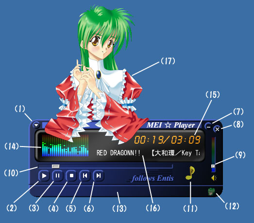

■ メインウィンドウ
(1) メニューボタン
ポップアップメニューを表示します。(2) 再生ボタン
音声・動画像の再生を開始します。(3) 一時停止ボタン
音声・動画像の再生を一時的に停止します。(4) 停止ボタン
音声・動画像の再生を停止します。(5) 前のファイルへ移動ボタン
プレイリストの1つ前のファイルを開きます。(6) 次のファイルへ移動ボタン
プレイリストの次のファイルを開きます。(7) 最小化ボタン
メインウィンドウを最小化します。(8) 終了ボタン
萌衣☆Player を終了します。(9) 音量バー
音量を調整します。(10) 再生位置トラックバー
音声や動画像の再生位置を表示します。
マウスでドラッグすることによって再生位置を移動できます。(11) 新着情報表示ボタン
新着情報を表示します。
ネットに接続できる環境では、萌衣☆Player に関する新着情報が無いかチェックし、新着情報がある場合には♪アイコンがアニメーションして知らせます。(12) フェイス表示・非表示ボタン
フェイスを表示している時に非表示に、表示していない時には表示します。(13) ステータスバー
ボタンなどの説明メッセージなどが表示されます。(14) スペクトルアナライザー
スペクトルアナライザーです。(15) 再生時間
現在の再生時間と全体の長さが表示されます。(16) スクロールテキスト
ファイルの情報が表示されます。(17) フェイス
フェイスです。
ERI フォーマットとは、Leshade Entis が考案したマルチメディア情報圧縮フォーマットの規格です。
静止画像・音声・動画像データの可逆圧縮および非可逆圧縮が出来ます。また今後、汎用圧縮へも対応の予定です。
ファイルの拡張子は静止画像は ERI、音声は MIO、動画像は MEI となります。
圧縮率は既存の主要なフォーマット（PNG, JPEG, MP3, MPG）等と比較してもかなり優秀で、また ERI フォーマットを扱うことのできるライブラリも供給されていますので、簡単にプログラムから利用することも出来ます。
マルチメディア圧縮には可逆圧縮と非可逆圧縮と言う2つの種類があります。
可逆圧縮と言うのは、情報を完全に元通りに復元できる方法です。可逆圧縮で有名なものに PNG があります。
非可逆圧縮と言うのは、情報を圧縮する際に重要度の低い情報を削ることによって圧縮する方法で、圧縮された後のデータを完全には元通りには復元できません。非可逆圧縮で有名なものに JPEG があります。
但し、非可逆圧縮は可逆圧縮と比較してかなりの高圧縮を実現できます。また、圧縮された後のデータを複製しても、当然のことながらそれ以上品質が劣化することはありません。品質が劣化するのは再度圧縮する時です。
Copyright (C) 2002 Leshade Entis, Entis-soft.
All rights reserved.